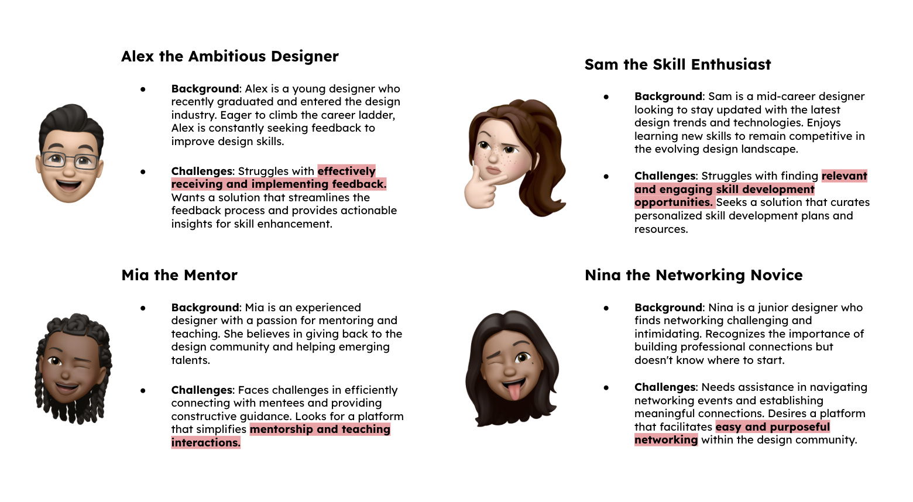
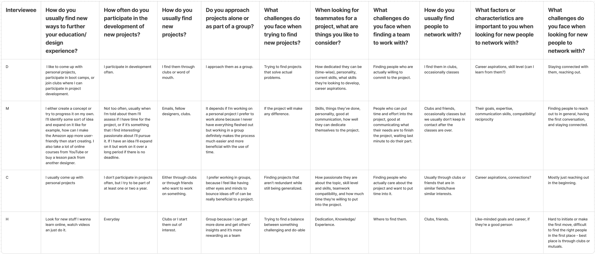

DI Designathon: Hubbble

A reimagined platform that bridges the gap between education and career for designers. It fosters professional growth through weekly challenges, niche communities, and a unique creative networking swipe feature. By blending a portfolio showcase with a welcoming community, Hubbble empowers users to sharpen their skills and build lasting industry connections.
I collaborated with two designers to research and build Hubbble during an 8-hour designathon at UC Davis. I served as one of the main designers, conducting user interviews, brainstorming initial designs to final prototype.
Mobile UI/UX
Product Design
Research
8 Hours
AWARDSBest Overall Design
Design is ever-changing and evolving. With the dynamic nature of the industry, designers find themselves navigating a constant stream of new trends and technologies, often struggling to stay ahead with career expectations.
Objective: Design a mobile or desktop application that seamlessly integrates with individuals’ daily lives to promote education and career development.
RESEARCHPersonas
We utilised the premade user personas developed by Design Interactive to understand the struggles of our target audience and to gain insight on what specific needs our users had; students wanting to network, seek more opportunities to improve their craft, and apply their skills to help their peers.

Interviews
Four detailed surveys were conducted to learn more about the desires students and individuals have and the challenges they face when approaching these goals.

We discovered that...
It was difficult to find people to connect with and to keep that connection.
Personal projects and online courses/videos further education and experience.
Most new projects stemmed from clubs and friends.